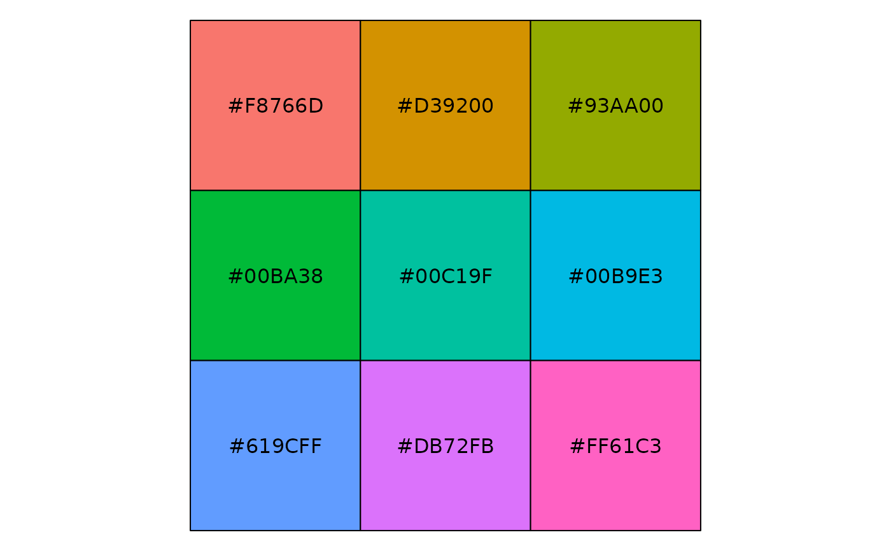
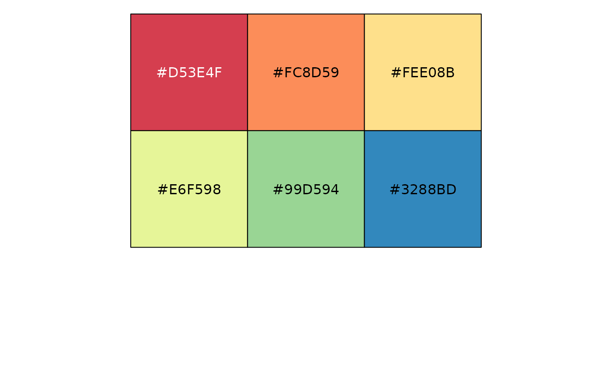
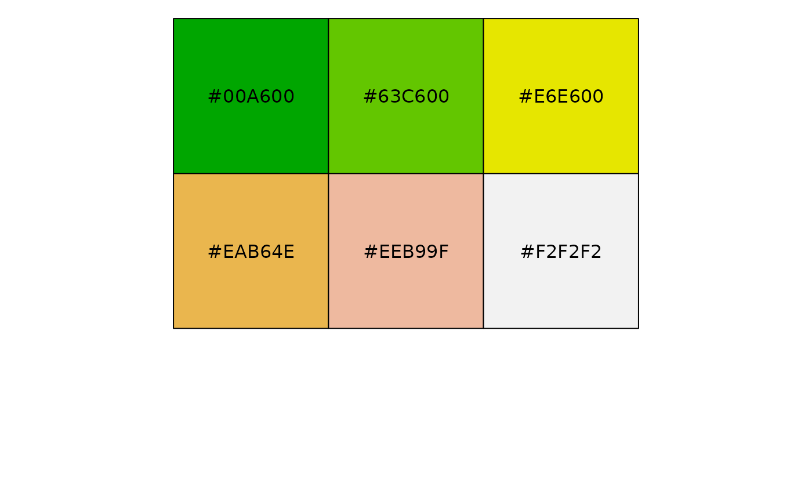
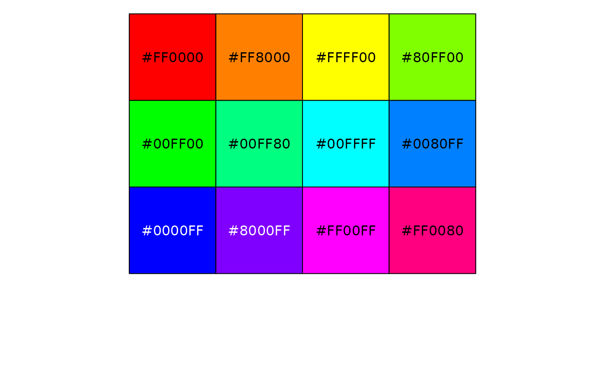
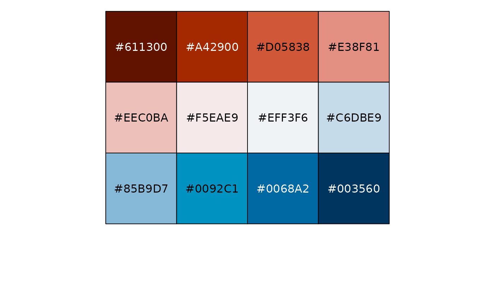
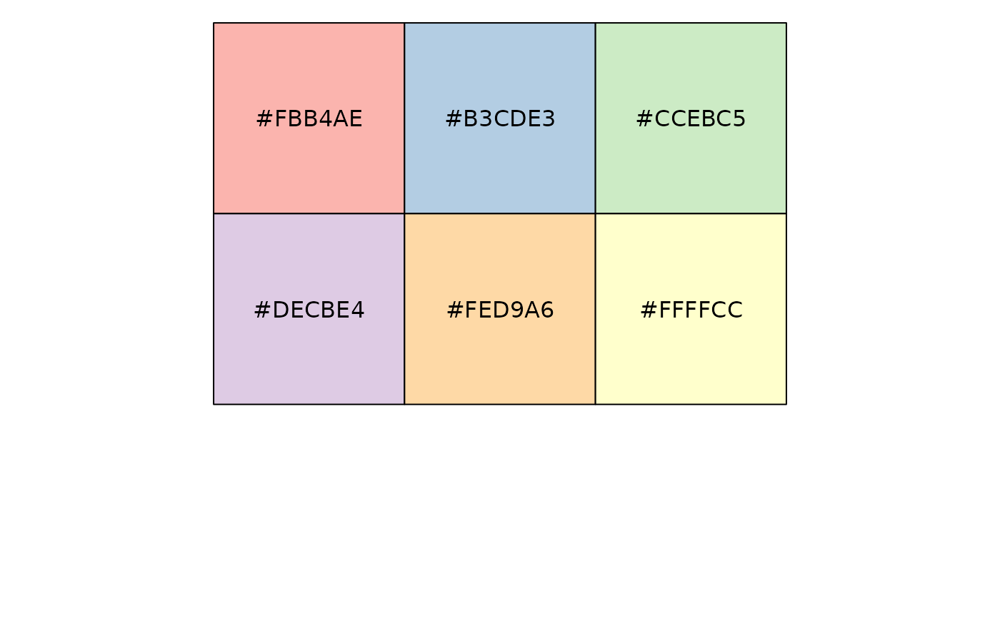
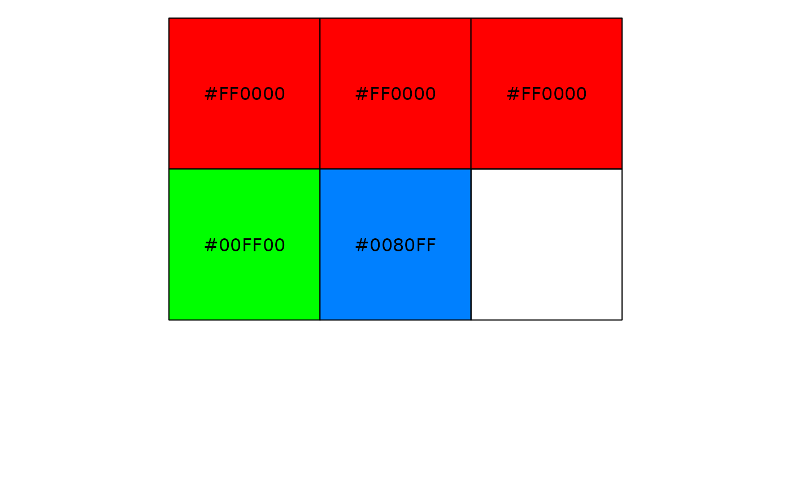

Selects colors from one of several palettes and output as a vector
gl.select.colors.RdThis script draws upon a number of specified color libraries to extract a vector of colors for plotting, where the script that follows has a color parameter expecting a vector of colors.
Usage
gl.select.colors(
x = NULL,
library = NULL,
palette = NULL,
ncolors = NULL,
select = NULL,
verbose = NULL
)Arguments
- x
Optionally, provide a gl object from which to determine the number of populations [default NULL].
- library
Name of the color library to be used [default scales::hue_pl].
- palette
Name of the color palette to be pulled from the specified library [default is library specific] .
- ncolors
number of colors to be displayed and returned [default 9].
- select
select the colors to retain in the output vector [default NULL].
- verbose
-- verbosity: 0, silent or fatal errors; 1, begin and end; 2, progress log; 3, progress and results summary; 5, full report [default 2 or as specified using gl.set.verbosity].
Details
The available color libraries and their palettes include:
library 'brewer' and the palettes available can be listed by RColorBrewer::display.brewer.all() and RColorBrewer::brewer.pal.info.
library 'gr.palette' and the palettes available can be listed by grDevices::palette.pals()
library 'r.hcl' and the palettes available can be listed by grDevices::hcl.pals()
library 'baseR' and the palettes available are: 'rainbow','heat', 'topo.colors','terrain.colors','cm.colors'.
If the nominated palette is not specified, all the palettes will be listed a nd a default palette will then be chosen.
The color palette will be displayed in the graphics window for the requested number of colors (or 9 if not specified),and the vector of colors returned for later use.
The select parameter can be used to select colors from the specified ncolors. For example, select=c(1,1,3) will select color 1, 1 again and 3 to retain in the final vector. This can be useful for fine-tuning color selection, and matching colors and shapes.
See also
Other Exploration/visualisation functions:
gl.pcoa.plot(),
gl.select.shapes(),
gl.smearplot()
Author
Custodian: Arthur Georges -- Post to https://groups.google.com/d/forum/dartr
Examples
# SET UP DATASET
gl <- testset.gl
levels(pop(gl))<-c(rep('Coast',5),rep('Cooper',3),rep('Coast',5),
rep('MDB',8),rep('Coast',7),'Em.subglobosa','Em.victoriae')
# EXAMPLES -- SIMPLE
colors <- gl.select.colors()
#> Starting gl.select.colors
#> Warning: Number of required colors not specified, set to 9 to display the colors
#> Warning: No color library or palette specified, set to default
#> Select one of baseR, brewer, gr.palette or gr.hcl
#> Library: scale
#> Palette: hue_pal
#> Showing and returning 9 colors for library scales : palette hue_pal

#> Completed: gl.select.colors
#>
colors <- gl.select.colors(library='brewer',palette='Spectral',ncolors=6)
#> Starting gl.select.colors
#> Library: RColorBrewer
#> Palette: brewer.pal
#> Showing and returning 6 colors for library RColorBrewer : palette Spectral

#> Completed: gl.select.colors
#>
colors <- gl.select.colors(library='baseR',palette='terrain.colors',ncolors=6)
#> Starting gl.select.colors
#> Library: baseR
#> Palette: terrain.colors
#> Showing and returning 6 colors for library baseR : palette terrain.colors

#> Completed: gl.select.colors
#>
colors <- gl.select.colors(library='baseR',palette='rainbow',ncolors=12)
#> Starting gl.select.colors
#> Library: baseR
#> Palette: rainbow
#> Showing and returning 12 colors for library baseR : palette rainbow

#> Completed: gl.select.colors
#>
colors <- gl.select.colors(library='gr.hcl',palette='RdBu',ncolors=12)
#> Starting gl.select.colors
#> Library: grDevices
#> Palette: hcl.pals
#> Showing and returning 12 colors for library grDevice-hcl : palette RdBu

#> Completed: gl.select.colors
#>
colors <- gl.select.colors(library='gr.palette',palette='Pastel 1',ncolors=6)
#> Starting gl.select.colors
#> Library: grDevices
#> Palette: palette.pals
#> Showing and returning 6 colors for library grDevice-palette : palette Pastel 1

#> Completed: gl.select.colors
#>
# EXAMPLES -- SELECTING colorS
colors <- gl.select.colors(library='baseR',palette='rainbow',ncolors=12,select=c(1,1,1,5,8))
#> Starting gl.select.colors
#> Library: baseR
#> Palette: rainbow
#> Showing and returning 5 of 12 colors for library baseR : palette rainbow

#> Completed: gl.select.colors
#>
# EXAMPLES -- CROSS-CHECKING WITH A GENLIGHT OBJECT
colors <- gl.select.colors(x=gl,library='baseR',palette='rainbow',ncolors=12,select=c(1,1,1,5,8))
#> Starting gl.select.colors
#> Processing genlight object with SNP data
#> Number of specified colors 5 corresponds to number of populations in supplied genlight object
#> Library: baseR
#> Palette: rainbow
#> Showing and returning 5 of 12 colors for library baseR : palette rainbow
#> Completed: gl.select.colors
#>